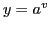
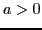
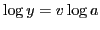
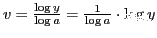
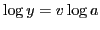
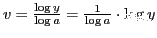

Next: Differentiation of the general Up: Rules for differentiating standard Previous: Differentiation of a logarithm Contents Index
Let , .
Taking the logarithm of both sides to the base  , we get
,
or
.
Differentiate with respect to
, we get
,
or
.
Differentiate with respect to  by formula (VIIIa),
by formula (VIIIa),
The derivative of a constant with a variable exponent is equal to the product of the natural logarithm of the constant, the constant with the variable exponent, and the derivative of the exponent.
david joyner 2008-08-11